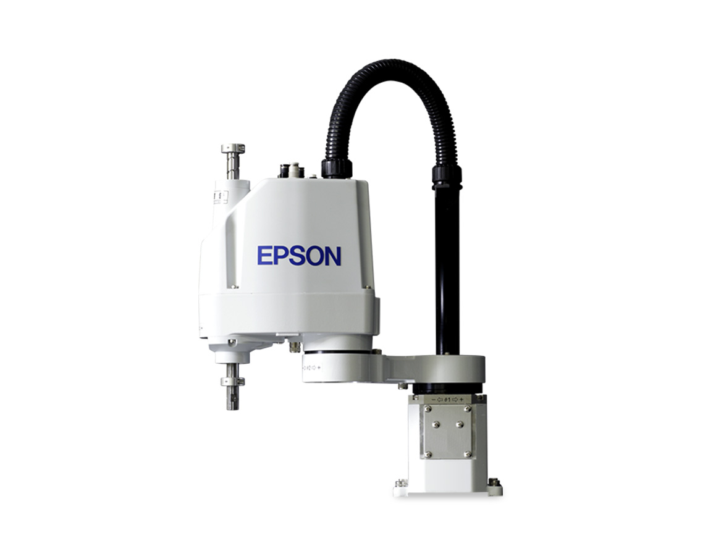
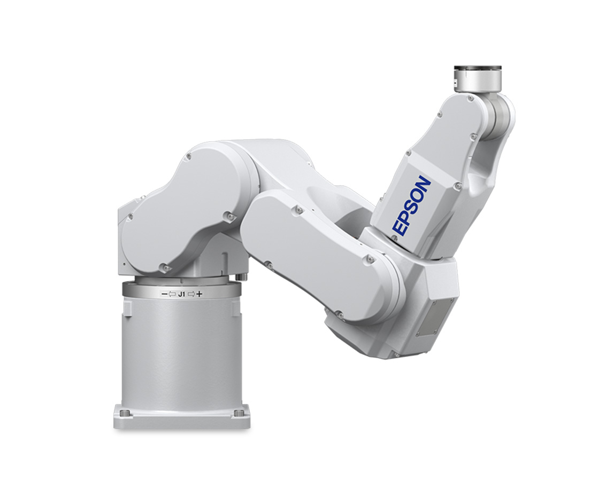
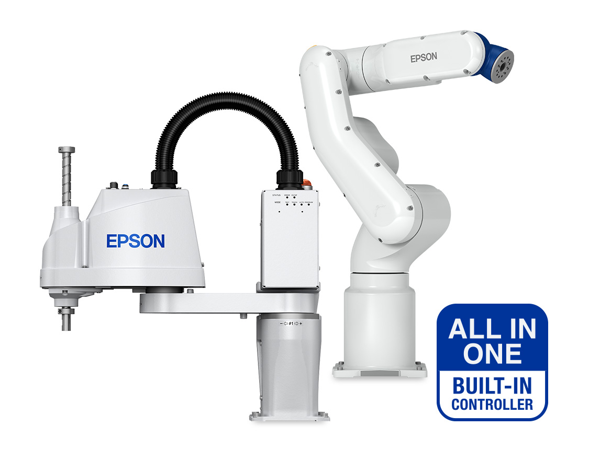

La galardonada gama de robots SCARA y de 6 ejes de Epson
Robots SCARA

Brindar a los clientes el poder de elegir ha convertido a Epson en el fabricante de robots SCARA número uno del mundo. Con más de 300 modelos, Epson tiene el robot adecuado para su aplicación.
Robots de 6 ejes

Los robots de 6 ejes compactos y de alto rendimiento ofrecen una flexibilidad y fiabilidad excepcionales. Con un diseño SlimLine único y un espacio reducido, los robots de 6 ejes de Epson pueden trabajar en espacios reducidos como nunca antes.
Robots de la serie todo en uno

Con un diseño que ahorra espacio, facilidad de uso y un controlador integrado, los robots Epson 6-Axis y SCARA All-in-One son una forma conveniente y de muy bajo costo de llevar la automatización a su fábrica.